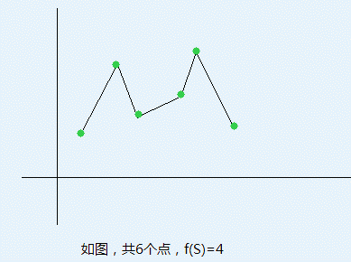

二维平面上有n个点(xi, yi)，现在这些点中取若干点构成一个集合S，对它们按照x坐标排序，顺次连接，将会构成一些连续上升、下降的折线，设其数量为f(S)。如下图中，1->2,2->3,3->5,5->6（数字为下图中从左到右的点编号），将折线分为了4部分，每部分连续上升、下降。

现给定k，求满足f(S) = k的S集合个数。
| F.A.Qs | Home | Discuss | ProblemSet | Status | Ranklist | Contest | 入门OJ | ModifyUser Xeonacid | Logout | 捐赠本站 |
|---|